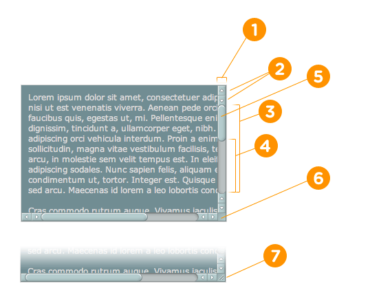

Tùy chỉnh style cho thanh scrollbar
Tùy chỉnh thanh cuộn trình duyệt đang trở nên phổ biến, và bạn có thể gặp những trang web có thanh cuộn độc đáo.
Hiện tại không hỗ trợ Firefox và IE/Edge.
Demo
Mặc định
Tùy chỉnh
Thuật ngữ
-webkit-scrollbar bao gồm 7 phần tử khác nhau và cùng bao gồm một phần tử giao diện thanh cuộn
đầy đủ:
::-webkit-scrollbar[1]: hình nền của chính thanh cuộn đó::-webkit-scrollbar-button[2]: các nút định hướng trên thanh cuộn::-webkit-scrollbar-track[3]: không gian trống bên dưới thanh tiến trình::-webkit-scrollbar-track-piece[4]: phần trên cùng của thanh tiến trình không bị che bởi ảnh thumb::-webkit-scrollbar-thumb[5]: phần tử cuộn có thể kéo để thay đổi kích cỡ::-webkit-scrollbar-corner[6]: góc dưới cùng của phần tử cuộn, nơi hai thanh cuộn gặp nhau::-webkit-resizer[7]: chỉnh sửa lại kích thước có thể kéo được xuất hiện phía trên thanh cuộn ở góc dưới cùng của một số phần tử
